|
TESTUDO HERMANNI
HERMANNI
EN LA ISLA DE MENORCA
Jonathan Gonz�lez y Jordi
Hern�ndez, 2007
Testudo hermanni hermanni (Gmelin,
1789).
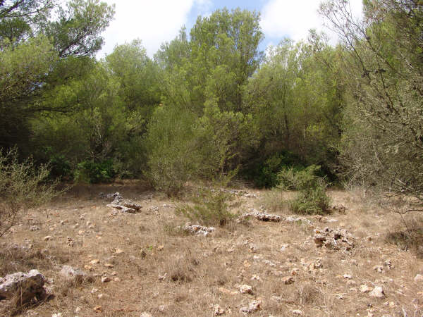
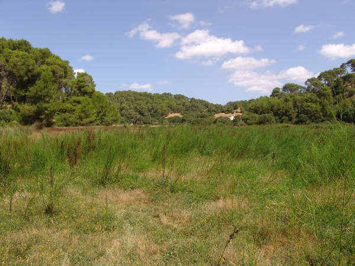
H�bitat de Testudo hermanni en la
isla de Menorca.
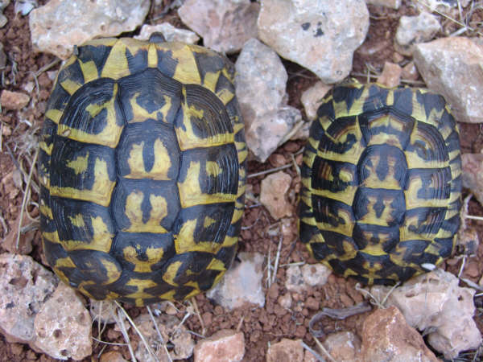
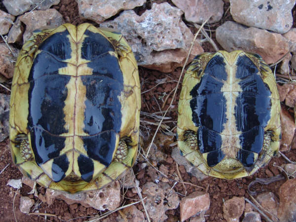
Pareja de Testudo hermanni
(izquierda: hembra, derecha: macho).
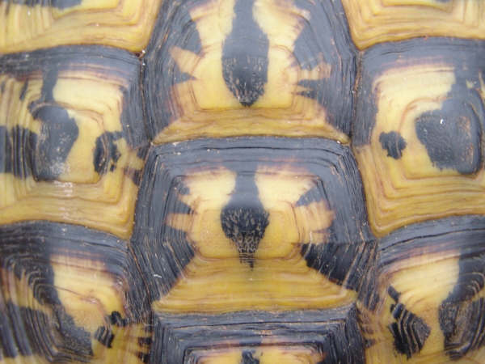
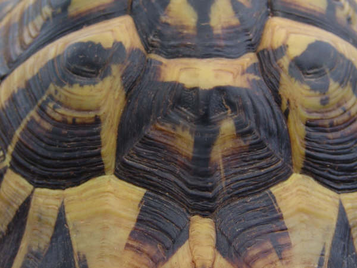
Detalle del caparaz�n de Testudo
hermanni.
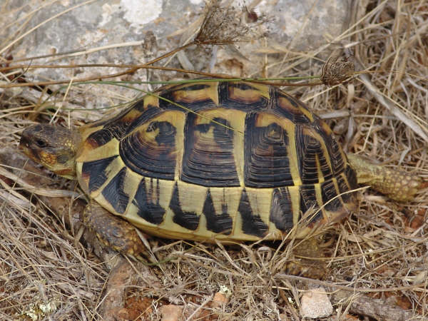
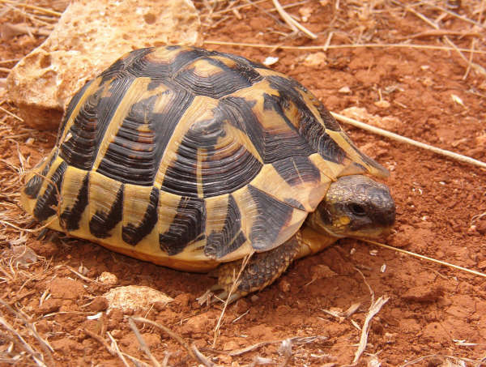
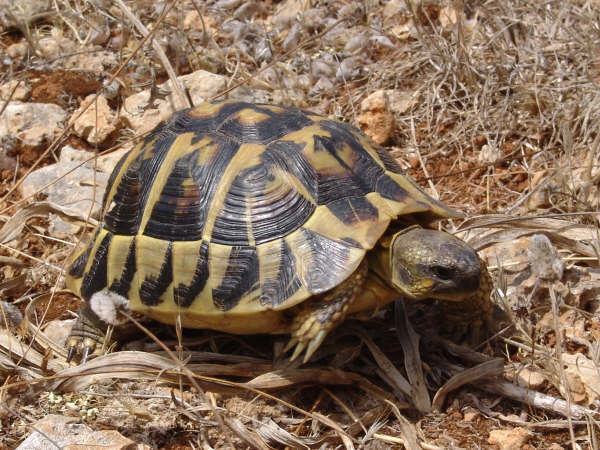
Distintos ejemplares de Testudo
hermanni.
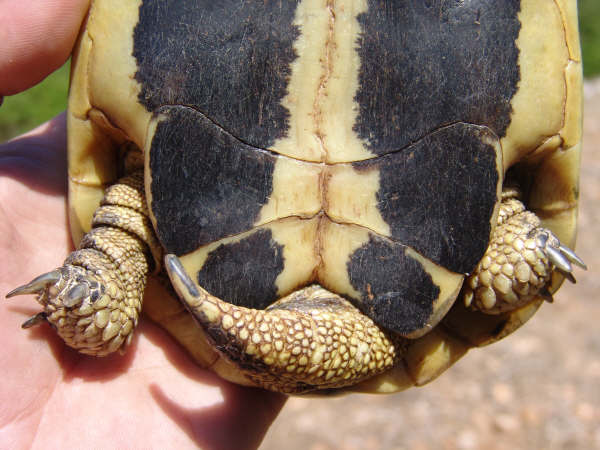
Detalle del plastr�n de un ejemplar
macho de Testudo hermanni.
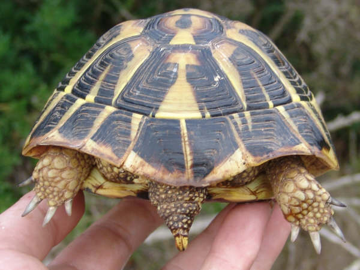
Detalle de la placa supracaudal dividida y del espol�n de la cola,
detalles caracter�sticos de la especie Testudo hermanni
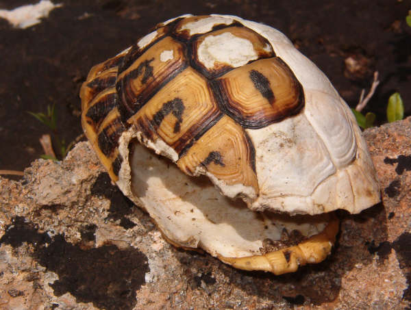
Restos de un caparaz�n posiblemente
devorado por una rata.
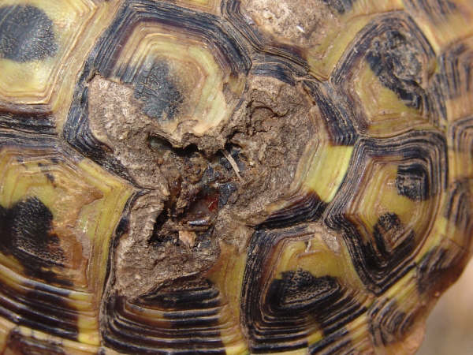
Heridas en el caparaz�n. Estas heridas
normalmente resultan de poca gravedad y la tortuga se recupera sin
ning�n problema.
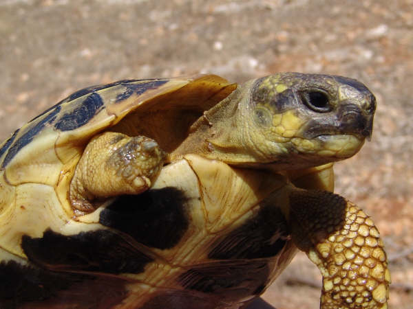
Extremidad amputada
probablemente
por el
ataque de una rata.
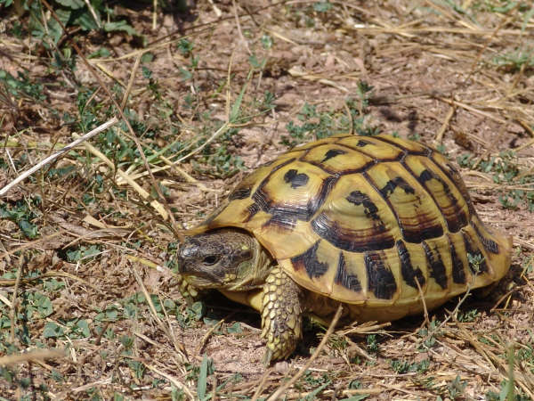
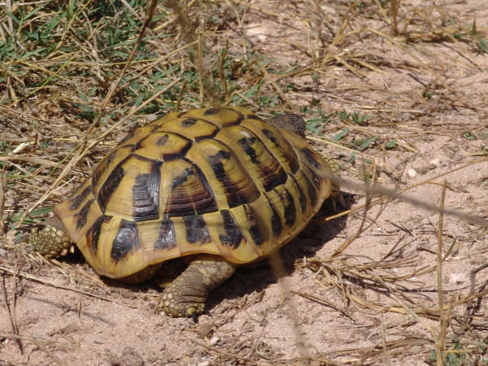
Ejemplar de Testudo hermanni con
una coloraci�n m�s clara de caparaz�n.
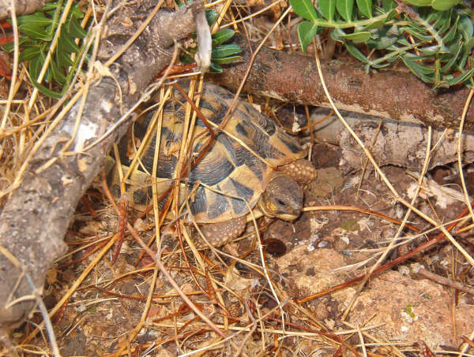
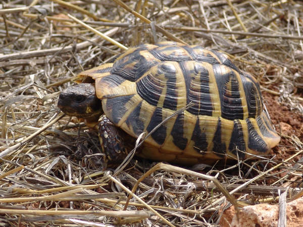
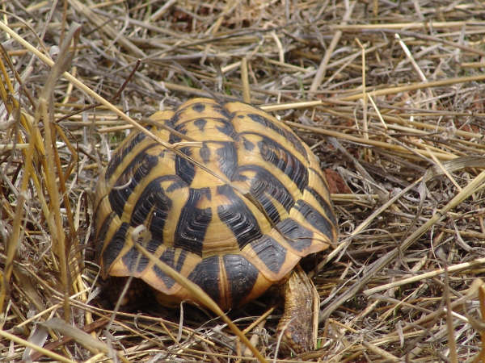
Ejemplares de Testudo hermanni.
|